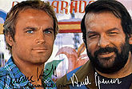

Bud Spencer
 De: La Frikipedia, la enciclopedia extremadamente seria.
De: La Frikipedia, la enciclopedia extremadamente seria.
 El viejo Bud y su amigo rubiales.
La primera esposa de Bud, donde se aprecia su atractivo fisico
Foto de Cachuli Spencer, minutos despues de caersele el jabon en la prision de alahurin
Enemiga de Bud realmente furiosa
Antonio Hidalgo, Último enemigo, pero por ello no menos peligroso
Bud Spencer, monstruo mitológico también conocido como uno de los mayores hijos de oeste. Por todos es sabido que Bud Spencer es un semidiós, y que no dudará en empezar a meter ostias al que le infle las pelotas.
Vida
Este tipo, nació dentro de 20 años, donde nace toda la gente, en Connecticut. Su madre era una obesa, y su padre el enano Gimli del señor de los anillos, de ahí su barba, y su expresión mala-virgeniana.
Durante mucho tiempo residió en el Valhalla, pero al ver que nadie allí era lo suficiente hombre como para aguantar sus poderosas collejas se transladó a Illinois, como buen americano, donde conoció a un rubiales con muy mala virgen también, y se dedicaron a grabar películas dando galletas allí a todo el que se movía.
Tuvo una etapa muy dura cuando el rubiales, que le quitaba a todas las chatis, se echó novia y él se quedó solo; en esa etapa, sin que nadie supiese sus motivaciones, se dedicó a participar en las olimpiadas 3 veces seguidas representando a Italia en natación. Ganó una por sus cojones y cuando el rubiales volvió a su lado jamás volvió a mirarle como antes; el rubiales habría perdido el respeto de Bud para siempre.
Poco a poco fue introduciendose en el mundo de la porno-zoofilia, donde conoció a su primera esposa: Carmen Bazán.
Tras varios años de noviazgo, tuvieron un hijo-puta, al que llamaron Julián Muñoz, que heredó de su padre el bigote y las hechuras, y de su madre la facilidad para forrarse sin dar un palo al hagua.
La vida sonreía al bueno de Bud, hasta que una empresa americana plagió su nombre para una nueva cerveza: Budweisser.
Bud contrató los servicios de su primo Emilio Rodriguez Menendez y denunció a la empresa, ganando el pleito y obteniendo como compensación los DVD's de todas las temporadas completas de Médico de familia, así como un calendario con los mejores desnudos de Marcial.
Ahora vive en su rancho de Texas junto a su nueva esposa, Ana Rosa Quintana, donde tiene una granja de cernícalos.
Cuenta la leyenda que es la única criatura existente capaz de derrotar a Chuck Norris, pero nunca lo dice muy alto por si acaso Chuck se entera.
Acciones más conocidas de Bud
- Comer.
- Comer de pie.
- Pegar.
- Pegar con muy mala hostia.
- Chocar cabezas de tios con sombrero.
- Soltar ostias a mano abierta.
- Soltar ostias a mano cerrada.
- Soltar ostias a mano entreabierta.
- Conducir boogies.
- Beber cerveza y engullir perritos.
- Tocarle las narices al rubiales.
- Ganchos de izquierda
- Ganchos de Derecha
- Ganchos con los pies
- Comer cocido
- Comer judías
- Comer Pan con chistorra
- Comer Garbanzos con chorizo
- Comer carne humana (en época de escasez)
- Comer plátanos de Canarias.
- Tener los ojos entornaillos.
- Rodar un anuncio de un banco de ahorros partiendole la cara a un mimo (y lo que se presente)
Enemigos Mortales
- Tíos con sombrero.
- Tíos sin sombrero
- Tíos en el oeste.
- Tíos sin sombrero en el oeste.
- Carod Rovira
- Gente.
- El rubiales, cuando se cree más listo que él.
- Humberto Janeiro padre.
- Laly Bazan.
- Enrique del pozo.
- Ernesto, el celador de Médico de familia.
- Antonio Hidalgo, cantante.
- El Ninja Púrpura
- Falete, cantante.
- Mike Haggar.
- Tíos sin sombrero.
- Este
- Ese
- Aquél
- Tú
- Yo
- El mimo del anuncio del banco de ahorros.
¿Sabías que...
- ...hace años que Bud no se ve el pito.
- ...un cocodrilo se rompió todos los dientes intentando morder el dedo gordo del pié del bueno de Bud
- ...lo condenaron a 20 años de prisión por casarse con Carmen Bazan.
- ...tras separarse de Bud, Carmen Bazán rehizo su vida y se caso con Emilio Aragón. ¿No lo sabías? Pues yo tampoco.
- ...a pesar de lo que diga Lidia Lozano, la hija de Romina y Albano esta muerta.
- ...el enemigo de Bud, Ernesto; se hizo la cirujia plástica y hoy en dia se dedica a la industria del porno bajo el pseudónimo de Nacho Vidal? Aunque para ello tuvo que realizarse un tratamiento que lo dejara con un Coef.Int. de -30.
- ...es imposible actuar peor que Dani Martin el de cuenta atrás.
- ...Bud tiene un hermano gemelo. Se llama TERREMOTO EARTHQUAKE y es muy aficionado a dar ostias de padre (tortazo en la cepa de la oreja), como lo hace Bud.
- ... Bud es el idolo de Torres
- ...Es el único que puede aguantar 5 minutos en el ring contra Chuck Norris ( algunos especulan que de hecho, son medio-hermanos)
- ...Michael Jackson tiene la cara así porque se cruzó con Bud Spencer cuando iba a sacar dinero del banco.
Apariciones Estelares
- Bud aparece en el 100% de los cadillac & dinosaurs y en el final fight, pues los gordos que aparecen, son él. Todos son él.
- En kingpin sin kingpin(el rey pillo) no está gordo, todo en él son musculos, como el bueno de Bud.
- En cada una de las pelis de bud spencer sale bud spencer, sino, sería un bucle infinito y mal elaborado.
- Shrek es bud spencer.
- [[1]]
- [[2]]
- Sigfrido es interpretado por Bud Spencer en El anillo del nibelungo. En un principio iba a interpretar a Odín o Thor, pero ningún dios nórdico era tan fuerte como el bueno de Bud.
Autor(es):
- Aque
- Seymour M
- Jokergranada
- Rubenyn
- Latiosu
- Frikih
- Will be End
- Hoffmaneitor
- ArreKarallo
- Steve
Frikipedia 2005-2016, Licencia
GFDL 1.2 - Extraído por FrikiLeaks